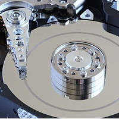
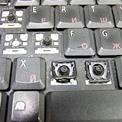
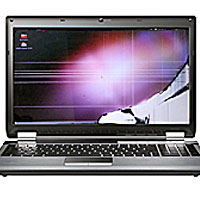
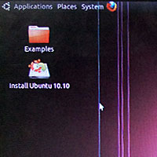
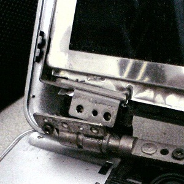
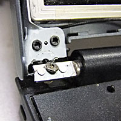
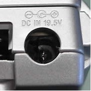
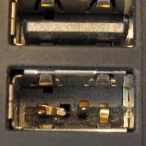
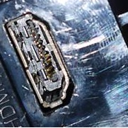

ПРОБЛЕМИ ПРИ ИЗПУСКАНИЯ ИЛИ МЕХАНИЧНИ УДАРИ
Механичните удари са доста срещан случай на повреда на лаптопите. Ако това се случи по време на работа почти сигурно се повреждат техните хард дискове. По време на работа главите на хард диска са съвсем близо до повърността на дисковата плоча. След падане или някакво шоково сътресение, тези глави задират във въртящата се повърхност и това със сигурност води до загуба на информация, понякога дори на целия хард диск.
LCD eкранът е следващия по ред на счупване. Той е доста нежен, особено при някои малки и леки лаптопи от ново поколение. Екраните не се чупят само при изпускане или сътресения. Много често ги чупим като сочим с химикалка някаква иформация на екрана на лаптопа или без да искаме сме забравили нещо на клавиатурата и затворим капака на компютъра. Счупването при този случай е почти гарантирано.
Понякога при изпускане на лаптопите нанасяме щети на затварящите механизми на капака на компютъра. Счупванията на механизма на капака за отваряне и затваряне обаче стават най-често от лоша изработка или дизайн и разхлабване на едната или двете панти, което ускорява процеса на повреждане. По същия начин действа грубото и рязко отваряне и затваряне.
Ударите по клавиатурата могаt да доведат до нейната повреда или да изкъртване на бутоните и. След това е възможно да се използват механизми и бутони от друга клавиатура за да се възстанови повредената, но понякога се налага нейната подмяна с нова.
Ето малко изображения на механично повредена повърхност на дискове, повредена клавиатура, повредени LCD матрици и счупени панти на лаптопи:






Докато предните повреди са свързани с рязък удар или някакво сътресение, при други механични интервенции повредите се появат постепенно. Тези счупвания и спуквания се отразяват най-вече на всички жакове и куплунзи, към които се включват външни устройства - захранващия адаптор, тонколони, слушалки, микрофони, USB устройства, HDMI устройства, Flash карти и всякакви други такива. Тези повреди се получават при опити за неправилно включване или постоянни механични разклащания по време на работа. Така бавно и сигурно жаковете се изкъртват или се отпояват от дънната платка, където най-често са запоени. Тези повреди трябва да бъдат отстранени, защото могат да навредят трайно на дънната платка, особено ако имате проблеми със захранващия жак. Ако е запоен за дънната платка той преминава през всички слоеве на платката и при механичен проблем започва да искри. Има голяма вероятност да подаде захранващо напрежение на слоеве на които не трябва. Резултатът при такива случаи е увреждане на дънната платка. Пагубни може да бъдат и USB жаковете. При много платки техните пинове директно влизат в южните мостове на дънната платка. Ако поради счупване и неправилна експлоатация основните пинове и захранващите напрежения се дадат накъсо, резултатът е тотална или частична повреда на южния мост и единственото спасение е неговата подмяна.
Ето малко изображения на механично повредени жакове:


